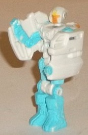
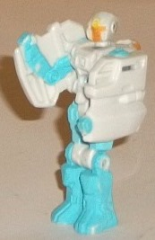
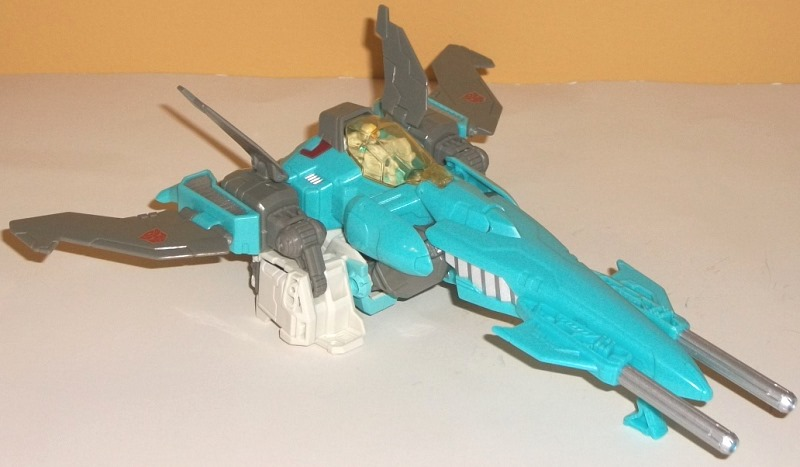
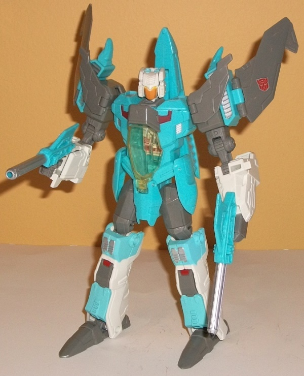

Difficulty of Transformation : Very Easy
Color Scheme : Pale off-white, light pastel greenish blue, and some pale yellow and dull pumpkin orange
Individual Rating : 4.7
Allegiances
: Autobot
Size
: Voyager
 Pilot
Pilot

Difficulty of Transformation
: Very
Easy
Color Scheme
: Pale off-white, light
pastel greenish blue, and some pale yellow and dull pumpkin orange
Individual Rating
: 4.7
Brainstorm's unamed Pilot
figure is, indeed, the first Headmaster figure in a long time. In the Pilot's
alternate mode, of course, it's Brainstorm's head; the sculpting here is
excellent, taking cues from Brainstorm's IDW design and with vents and
the like on the forehead and sides of the head. However, the more you turn
Brainstorm's head to the side, the worse the head mode looks-- it's definitely
longer than it is wide, and appears "stretched" out on the sides to accomodate
the Headmaster gimmick. The dull pumpkin orange faceplate looks quite nice
against the otherwise off-white head, though I wish the yellow offered
a bit more contrast against said off-white. Surprisingly, the neck is on
a balljoint, giving Brainstorm's head a bit of waggle when connected to
the main body.
Like basically every
Headmaster figure ever, the pilot figure has a very basic transformation,
as you basically just unfold the robot legs out from the back of the head
and stand the figure up. (Yes, this means that Brainstorms' face makes
up the back of the pilot figure, without any attempt to hide it.) The mold
detailing in this mode is excellent for such a tiny toy, with mechanical
detailing on the "space boots", a rather friendly-looking headsculpt, what
even looks like a little "spark chamber" in the center of the chest, and
rather intricate arm detailing molded onto the sides of the pieces that
form the sides of Brainstorm's head. The arms are definitely the big weakness
here, being really overly large; only the back sections of the sides of
the head should have been able to rotate forward to be part of the arms
to prevent these arms that look really overly bulky no matter what position
they're in. The pastel greenish blue color makes more of an appearance
in this mode, and though it's G1-accurate, I'm not a huge fan; it's not
dark enough to provide enough contrast against the off-white, and there's
no other prominent dark colors on the pilot figure, so it really needed
some here. For articulation, the pilot can move front-and-back at the shoulders,
hips, and knees (the latter two as one piece, as the legs are fixed together),
and ball joint movement at the neck. One word of warning; on many early
releases of this figure, the pilot figure couldn't fit into its head port
without scraping some of the paint of the sides of the head, but this seems
to have been (mostly) fixed on later releases. Also worth noting is that
this Headmaster can NOT be used as a head for any of the later "Titans
Return" figures, though the "Titans Return" Titan Masters can fit into
Brainstorm's neck socket, albeit very loosely.
 Brainstorm
Brainstorm


Difficulty of Transformation
: Easy
Color Scheme
: Gray, light sea foam
green, pale off-white, and some transparent yellow, silver, dull pumpkin
orange, light pastel greenish blue, dark dull red, and pale yellow
Individual Rating:
7.8
Brainstorm's vehicle
mode is a futuristic jet, and is based a bit more off his IDW comic appearance,
which has a bit more of a sleeker, more aerodynamic design than his G1
toy. Looked at from a top-down view, this mode looks quite cool. The nosecone
is very long, and the two winged guns at the front look quite nice and
help to distinguish Brainstorm from other jet TFs. The four wings on the
back end are just a little on the small side, but still look pretty nice.
The mold detailing is also quite good, with it being fairly minimal to
give Brainstorm that more streamlined look, but there's stil some here
and there, like vents along the sides and the top and occasional "aerodynamic"
lines along the wings and main body. There's also a cockpit that the pilot
figure can fit into fairly snugly, though it's a bit of a tight fit. The
colors are a bit better than the pilot's overall, with a nice sea foam
green being the main color, particularly in this mode. The gray-- used
more towards the back end-- I'm not as fond of. It's not bad per se-- it
does give a nice darker color for the lighter colors to contrast against--
but it is rather dull and uninteresting, even if it is G1 accurate. There's
also the bone-white that's so prominent on the pilot figure, though for
Brainstorm this color is mostly hidden on the underside and is more visible
in the robot mode. The white goes nicely enough with the gray, but it's
a bit light of a shade to go all that well with the sea foam green, and
this is even worse where the sea foam green is paint-- there the green
actually becomes more of a pastel greenish blue that doesn't quite match
the plastic color and looks overly flat. However, there are a few minor
accent colors to spice things up-- the dark red deco around the cockpit
goes excellently with the gray and the seafoam green, to the point where
I wish it was used considerably more often on the toy. There's also a bit
of silver, which looks nice but is functionally the same as the gray in
terms of the area of the color wheel. Anything mentioned so far is very
minor, however, compared to Brainstorm's VERY prominent robot mode extras
in this mode. His lower arms are folded under the wings-- and they're thick
lower arms, which looks really bad. The legs also stick out considerably
from underneath the main body of the jet, even going far back behind the
jet. I think they're supposed to be thrusters or something, but it just
doesn't work-- they're too obviously Brainstorm's legs. On the plus side,
Brainstorm does have a fold-out landing gear underneath the nosecone to
keep him level on a surface with all that undercarriage junk, and the nosecone-guns
can move up and down (as can each of the four wings).
Brainstorm's transformation
is very simplistic, particularly for a Voyager-class toy; you literally
just unfold his arms, switch around his nosecone and legs, and then plug
in his head and angle back his wings a bit. Still, for all the simplicity,
Brainstorm's robot mode is definitely where the design emphasis was on
this toy. As far as proportions and kibble go, I really have a problem
finding ANYTHING wrong with this mode. Outside of skinny mid-arms and oddly
long feet, he's pretty much perfect in terms of his proportions, and in
terms of kibble, all you've really got are the wings on the shoulders and
the nosecone sticking up from behind his back, both of which enhance his
silouhette and make him look more unique. Because of how much is shared
between the two modes visually, I don't have much to say about his mold
or paint detailing here that I haven't already said-- same with his overall
color scheme. Brainstorm's articulation is also pretty good-- he can move
at the neck, shoulders (at three points), elbows (at two points), inwards
at the wrists, outwards at the "waist skirt" pieces, and movement at the
hips (at two points, one of them a nice tough ratchet joint that keeps
him quite stable in this mode), and movement at the knees (at two points)
and slight tilts at the ankles. Really, other the lack of articulation
at the waist, there's not much here to nitpick, either. All this said,
Brainstorm's wrists are quite loose, to the point where his hands flop
around quite easily, which is mildly annoying. Brainstorm's twin guns on
his nosecone can be detached and held in his hands in this mode-- a nice
bonus. Another neat little gimmick-- in a callback to the original Headmasters--
is that when you plug in Brainstorm's head, the seat in the cockpit flips
down to reveal a "Speed/Strength/Endurance" meter. It's not a complete
reference to his tech specs in terms of everything being there, but it's
a nice little nod. (You do have to manually flip up the seat back into
place when transforming Brainstorm back to vehicle mode.)
The Generations "Thrilling 30th" version of Brainstorm definitely has its downsides-- namely a ton of visible kibble in vehicle mode, really awkward arms for the Headmaster pilot, an overly simplistic and straightforward transformation for a voyager that doesn't do much, and a color scheme I'm very lukewarm on, even if it is G1-accurate. Still, his robot mode is simply amazing in pretty much every respect, and he's got great proportions, articulation, and balance, and some neat little gimmicks. And, heck, he actually looks like a jet in vehicle mode, despite the kibble issues (yes, you just got a mini-preview of my review of Titans Return Brainstorm, right there). If you miss Headmasters and want a more updated, sleek Brainstorm, this is the version you want. The Titans Return version I'd only recommend if cross-compatibility with the Headmasters and Brainstorm is THAT important to you above all else.
Review by Beastbot